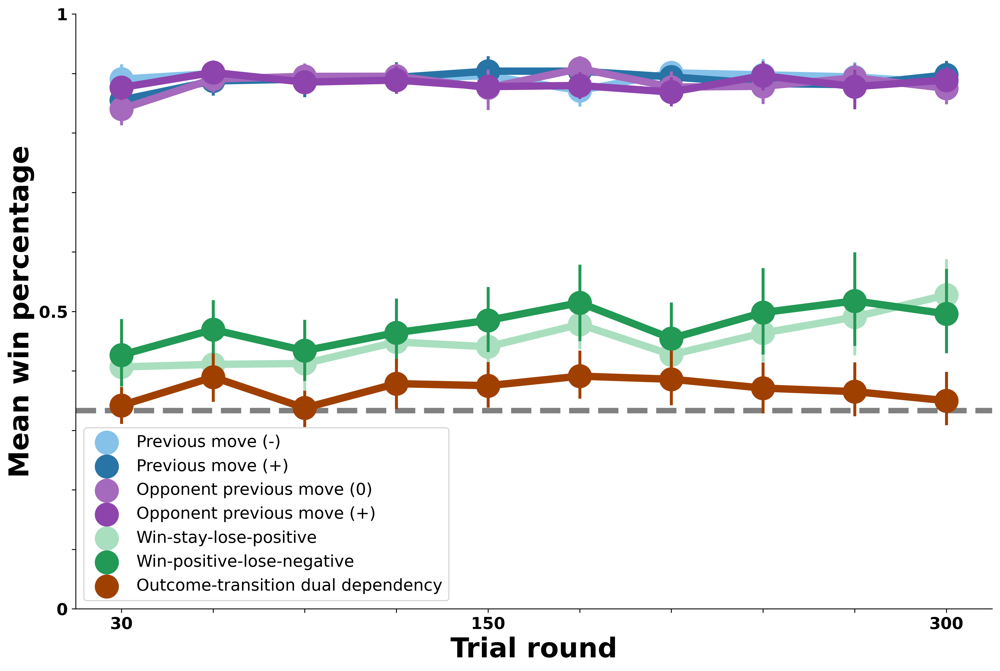
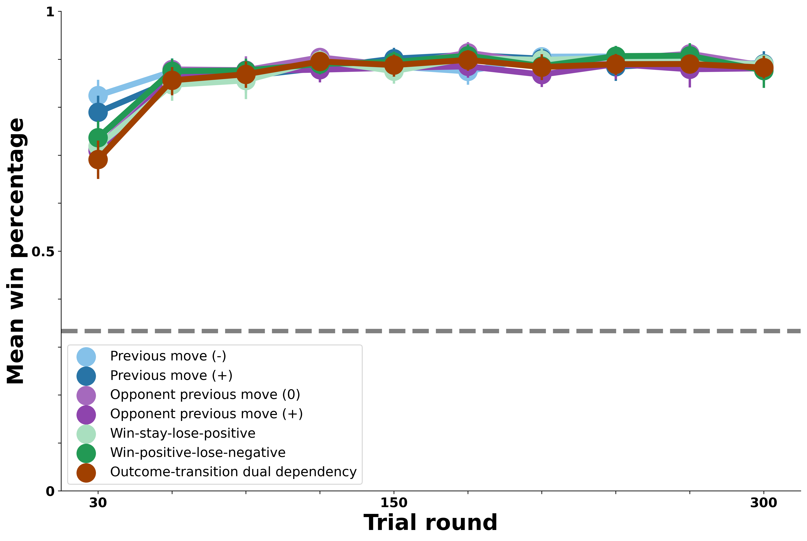

Model Results
Contents
Model Results#
Overview#
As described in the previous Model Overview page, we evaluate the success of this model by comparing its decisions to human behavior in our experimental data. Concretely, we implement six versions of the Model-Based Agent: each version differs in the specific set of behavior patterns it uses to try and predict its bot opponent’s moves. In this way, the results shown here allow us to ask: what kind of predictive opponent modeling strategy best accounts for people’s performance against the bot opponents?
For an accurate comparison to human behavior, each version of the model simulates all of the games played by participants in our earlier experiment. Therefore, the model results below represent a simulation in which every participant in our initial experiment was replaced by the Model-Based Agent being tested. We are interested in assessing which version of the model most closely resembles the pattern of human outcomes against the full range of bot opponents.
In the first section below, we show the human results against each bot; this is the pattern our model attempts to capture. Then, we show simulation results for six different versions of the model, each one increasing in complexity from the previous one.
At a high level, we find that capturing human behavior against the bots requires tracking multiple distinct patterns in the opponents’ moves over time. However, even the closest-matching version of our Model-Based Agent fails to account for several key features of human performance in our experimental data.
Model Benchmark: Human Performance#
In the figure below, we first show human performance against each of the bot opponents. On \(y\), we plot average human win percentage against the bots in each block of 30 trials on \(x\). The gray dashed line at 33% win rate represents chance performance. Performance against each bot is shown in a different color, with bots that exhibit similar patterns in their own moves shown in similar colors (e.g., blue for self-transition bots, purple for opponent-transition bots, green for outcome-transition, and brown for the most complex dual-outcome-transition bot).
The overall pattern of people’s ability to exploit certain bot behaviors shown below is what we seek to capture with the different versions of our Model-Based Agent.

Several key patterns emerge in the figure above which we attempt to capture in our modeling results:
Against the bot opponents that exhibit simple transition patterns in blue and purple (Previous move and opponent previous move dependencies), people show strong performance. People rapidly learn the bots’ behavioral patterns and win reliably against these opponents for most of the experiment.
Against the bot opponents whose transitions each round vary based on the previous outcome shown in green (win-stay-lose-positive and win-positive-lose-negative), people exhibit some ability to win above chance levels. However, this is notably attenuated relative to the simple transition bots above—people learn to exploit these opponents only in the last 100 rounds or so and don’t perform nearly as well.
Finally, against the most complex bot opponent in brown, whose moves are chosen each round based on the previous outcome and the bot’s previous transition, people never perform above chance. In short, the patterns exhibited by this bot appear to be too complex for people to detect or exploit over the 300 rounds.
Therefore, we can synthesize the above by saying that the patterns exhibited by the bot opponents represent a range of behaviors which people can either recognize and exploit maximally, partially, or not at all.
How well can different versions of the Model-Based Agent capture these empirical patterns?
Null Model: Tracking Opponent Move Baserates#
The first version of the Model-Based Agent we test is the simplest version described in the Model Overview; this version merely tracks the proportion of each move chosen by its opponent. The prediction that forms the basis of the Model-Based Agent’s own move choice is, in this case, that its opponent will choose whatever move it had chosen most in previous rounds. This represents a null model because none of the bot opponents in our experimental data could be exploited merely on the basis of their move baserates. As such, we do not expect this simple version of the Model-Based Agent to perform well in simulated rounds against any of the bot opponents.

Our results in the figure above are consistent with the null model prediction. This simple version of the Model-Based Agent performed at chance against all seven of the bot opponents. Thus, using an opponent’s move common previous move to predict their next move fails to capture human learning against the bot opponents in our experiment.
But what about a more complex predictive model of the opponent?
Transition Model: Tracking Opponent Self-Transitions#
The first version of the Model-Based Agent we test that aligns with the behavior of the bots in the experiment is one that tracks its opponent’s self-transitions across rounds. This version of the agent ought to perform very well in simulated rounds against the self-transition bot opponents in blue (those exhibiting previous move patterns). But how quickly will the agent learn those opponent patterns compared to humans? And how well will it perform in simulated rounds against the other bot opponents? The figure below allows us to explore these questions with greater quantitative precision.

Results from the Model-Based Agent tracking opponent self-transitions exhibit several key differences from the human behavioral data above. First, as we anticipated, the agent shows clear evidence of learning to predict and exploit the self-transition bot opponents in blue, just as people did. However, the agent learns these patterns much more rapidly and effectively than people did, suggesting that people’s ability to track this pattern, evident in their performance against the self-transition bots, was not quite optimal. Next, this agent’s ability is relatively restricted to the self-transition bots. The agent performs above chance against the opponent-transition bots but not as well as people did (this above chance performance, intriguingly, suggests that the opponent-transition bots in purple displayed a certian level of predictability in self-transitions, despite choosing their moves based on opponent-transition patterns). By the end of the 300 rounds, this agent shows similar performance against the outcome-transition (green) and dual-outcome-transition (brown) bots; however, the learning curve against the outcome-transition bots is quite different. In summary, this agent captures people’s success against the self-transition bots but is far from human performance against the opponent-transition bots.
Does the Model-Based Agent perform better when tracking the bots’ opponent-transitions?
Transition Model: Tracking Opponent Opponent-Transitions#
We next test a second version of the Model-Based Agent that is symmetrical to the one above, except this one tracks exclusively opponent-transition patterns in its bot opponent’s moves. As above, we expect this version of the agent to perform strongly against the bots whose moves follow opponent-transition patterns (the opponent previous move bots, shown in purple in the figure below). Further, given the similarity of this agent to the previous one, we expect roughly similar results, with above-chance performance against the self-transition bots and close to chance behavior against the others. Below we plot the agent’s win rate in simulated rounds against each of the bot opponents, as above.

As expected, this version of the agent is symmetrical to the one above. It performs optimally against the bot opponents that exhibit precisely the opponent-transition patterns it is tracking. As above, it performs above chance but not nearly as well against the bots that exhibit self-transition patterns, and at chance against the rest.
Critically, in the human data above, we saw that people performed similarly well against bots that exhibited self- and opponent-transition patterns. The version of the agent in this and the preceding section, which tracks only one or the other patterns, is not able to match human win percentages against both types of bot opponents. How does an agent that instead tracks both patterns perform?
Combined Transition Model: Tracking Opponent Self- and Opponent-Transitions#
Below, we evaluate performance of a version of the model that tracks both self-transition and opponent-transition patterns in its opponent’s behavior. How does it integrate both of these pattern types into its decision process? Recall that the Model-Based Agent chooses its move by computing the expected value of each possible move, then sampling according to the softmax distribution over these expected values. The versions of the model above, which only consider a single type of pattern in their opponent’s moves, compute the expected value of a move based on the probability assigned to each possible opponent move by the pattern they are tracking. This version of the model instead calculates expected value for a given move multiple times under different assumptions about the pattern in the opponent’s moves. It then adds these values up before generating the softmax distribution. For example, the expected value of Rock used in the softmax distribution will be the expected value of choosing Rock if the opponent is a self-transition bot plus the expected value of Rock if the opponent is an opponent-transition bot. In this way, the agent is capable of responding to either type of pattern in its opponent’s moves.

Results show that an agent that tracks multiple possible patterns in their opponent’s mvoes in this way is capable of performing optimally against both the self-transition and opponent-transition bots. In this way, this agent is the first to exhibit human-like success against the bots. As shown above, this agent succeeds far better against the self- and opponent-transition bots than people did. It also shows some success against the outcome-transition agents, despite not tracking these patterns explicitly. Given the moderate success of people against the outcome-transition bots, this agent might offer a reasonable account of how humans adapted to the bots; it represents a testable hypothesis about people’s success against the outcome-transition opponnets (namely, that they exploited asymmetric transition rates in these bots’ moves).
How much better does the agent do when it instead explicitly considers its opponent’s transition patterns after each outcome?
Outcome-Transition Model: Tracking Opponent Transitions Across Outcomes#
Below, we consider an extension of the previous agent which considers not only the baserate of its opponent’s simple transitions, but also the probability of its transitions given each round’s previous outcome. In this way, it is equippped to track the full scope of the outcome-transition bots’ behavioral dependencies rather than any bias in transitions they happened to exhibit.

The figure above shows that when tracking opponent patterns at this level, the Model-Based Agent performs opetimally against the outcome-transition oppponents. This far outstrips human performance against these bots, suggesting that people either did not track their opponent’s behavior at this level of pattern complexity, or that their ability to choose moves that exploit such a pattern was much noisier, something that could also be tested in future work.
Dual-Outcome-Transition Model: Tracking Opponent Transitions Across Outcomes and Prior Transitions#
Finally, below we plot results for an agent that considers all the patterns exhibited by the bots. This represents a kind of theoretical ceiling for performance; how well can a learner perform when they consider a range of behaviors that fully encapsulates all possible opponents?

In the figure above, this agent has uniformly optimal performance against all of the bot opponents. Interestingly, against the more complex opponents (especially the dual outcome-prior-transition opponent here), more interactions are needed to fully learn the patterns in their behavior. Thus, it’s in principle possible to have bot opponents whose behavior, despite being highly predictable cannot be fully exploited for many rounds until the full set of contingencies in their moves have surfaced. Here, we see that for even the most complex opponnet, this does not pose a challenge to an optimal learner (though it surely does for humans!).